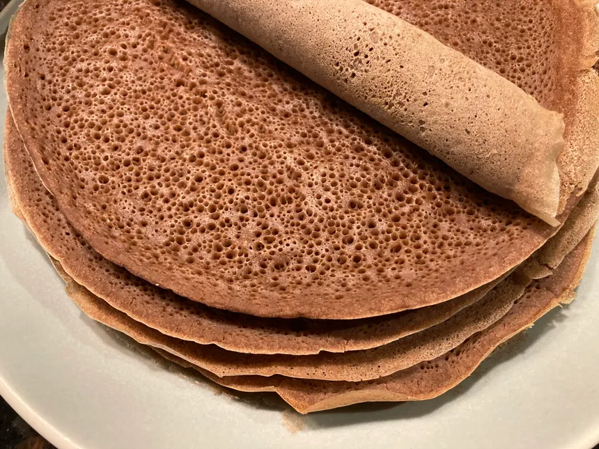

Injera

Injera is a traditional Ethiopian flatbread that serves as both a staple food and a utensil in Ethiopian dining. It is made from teff flour, a tiny, nutrient-rich grain native to Ethiopia, though sometimes wheat, barley, or a blend of flours may be used. Injera has a unique sourdough-like flavor and a spongy, slightly chewy texture. Its surface is covered with tiny holes, which are created during the cooking process and help absorb the flavorful stews and sauces it accompanies.
Ingredients
-
2 cups teff flour (or a mix of teff and all-purpose flour if teff is unavailable)
-
4 cups water
-
Salt to taste
-
Vegetable oil for cooking
Steps
-
Mix the teff flour with water in a large bowl until it forms a thin batter (similar to pancake batter). Cover and let it ferment at room temperature for 2–3 days (or up to 5 days for a stronger sour flavor).
-
Once fermented, stir in salt.
-
Heat a nonstick skillet over medium heat and lightly grease it with oil.
-
Pour a ladleful of the batter onto the skillet and quickly spread it in a circular motion to form a thin layer.
-
Cook until holes appear on the surface and the edges start to lift, about 2–3 minutes. Do not flip; injera is only cooked on one side.
-
Remove and repeat with the remaining batter. Stack the injera as you cook